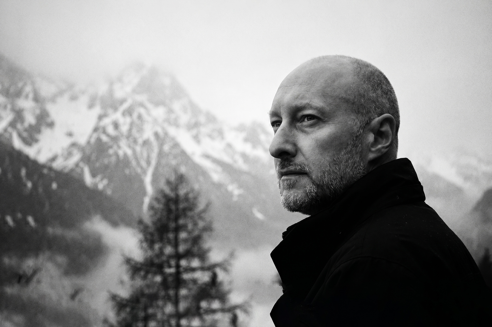
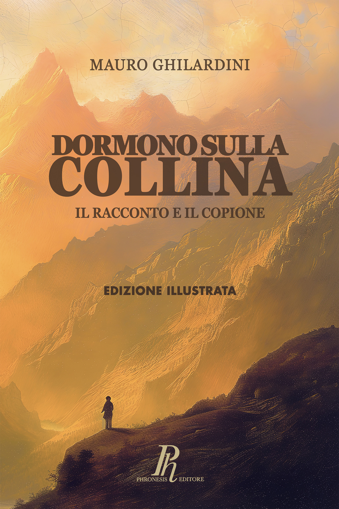

Mauro Ghilardini
/

Mauro Ghilardini
{{ manifestoLabel }}
{{ manifestoLead }}
{{ manifestoBody }}
{{ manifestoSign }}
{{ liveLabel }}
{{ nextTitle }}
{{ nextWhere }}
{{ nextWhen }}
{{ repTitle }}
{{ repSub }}
{{ repG1 }}
{{ r.name }}
{{ r.meta }}
{{ repG2 }}
{{ r.name }}
{{ r.meta }}
{{ discIntroLabel }}
{{ discIntro }}

{{ teachLabel }}
{{ teachTitle }}
{{ teachBody }}
CDpM Bergamo{{ teachT1 }}
Reparto Elettroacustica{{ teachT2 }}
{{ videoTitle }}
{{ videoCta }} →
{{ bioLabel }}
{{ bioTitle }}
{{ p.t }}